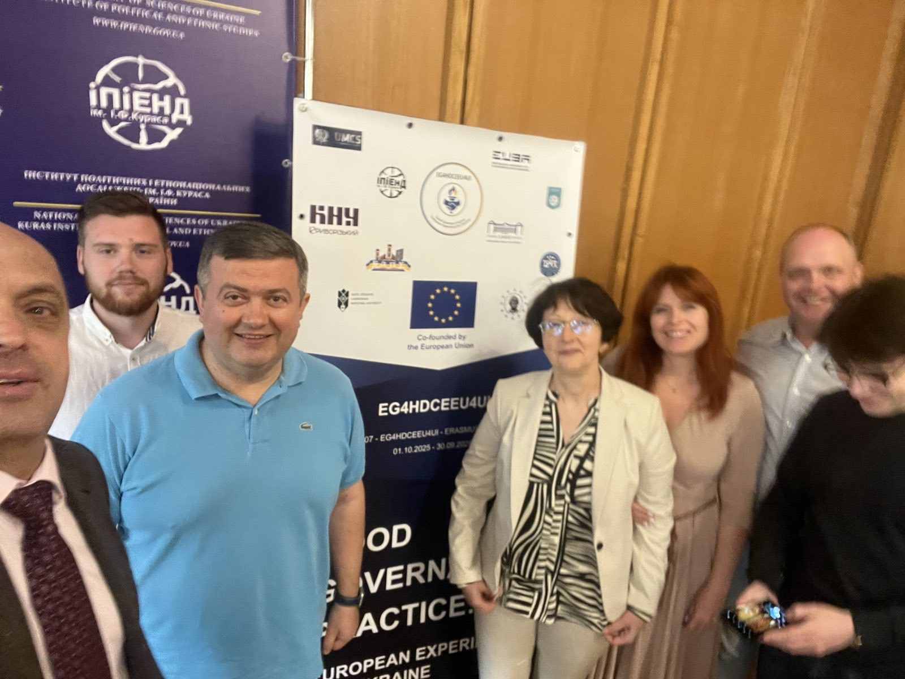
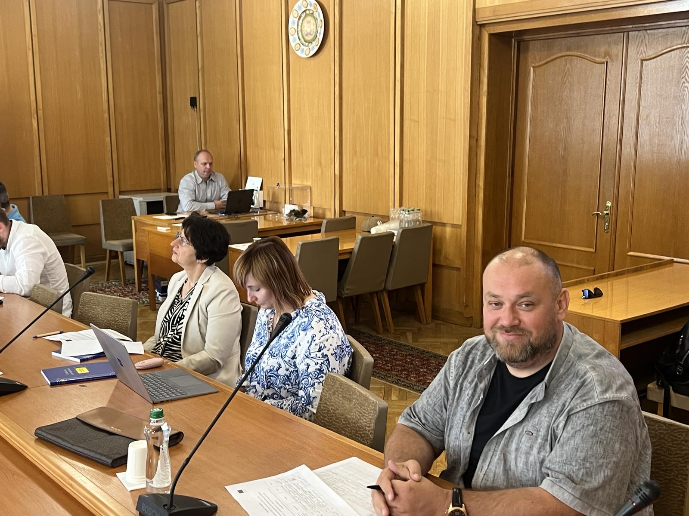

European Good Governance Experience in Wartime Discussed at the Second Round Table



On 11 September 2026, the Institute of Political and Ethno National Studies named after I. F. Kuras of the National Academy of Sciences of Ukraine hosted the second round table within the Erasmus+ CBHE project “Good Governance Practice: European Experience for Ukraine” (EG4HDCEEU4UI, No. 101237607, ERASMUS-EDU-2025-CBHE), coordinated by Dragomanov Ukrainian State University, which serves as the project grant holder. Representatives of the project consortium partner universities took part in the event. The round table was held in in-person and online formats and was moderated by Rostyslav Balaban, the project coordinator from the Institute of Political and Ethno National Studies named after I. F. Kuras of the National Academy of Sciences of Ukraine, Leading Researcher, Candidate of Political Sciences. The round table featured presentations by:
- Olena Kryvylova, Doctor of Pedagogical Sciences, Berdyansk State Pedagogical University — on European principles of good governance in wartime and community–education partnerships for resilience;
- Vasyl Klymonchuk, Doctor of Political Sciences, Vasyl Stefanyk Carpathian National University — on good governance practices under martial law, with a focus on the Ivano-Frankivsk territorial community;
- Dmytro Ruban, Borys Grinchenko Kyiv Metropolitan University — on citizen participation in public policy-making: from formal consultation to a culture of joint decision-making.
During the discussion, participants examined practical aspects of good governance under martial law, ranging from civic participation at the local level to the transformation of public policy models in response to crisis conditions. Particular attention was paid to opportunities for adapting European experience to the Ukrainian wartime context. The materials of the round table are available via the link.